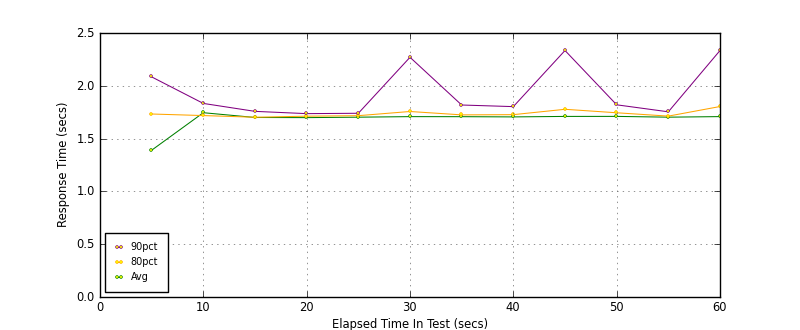
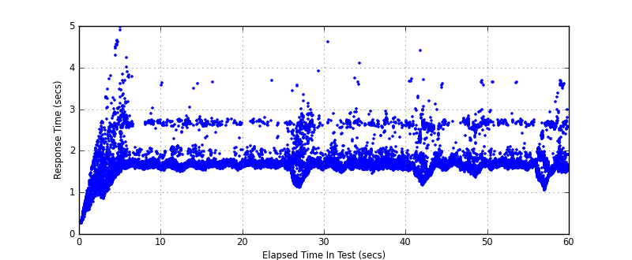
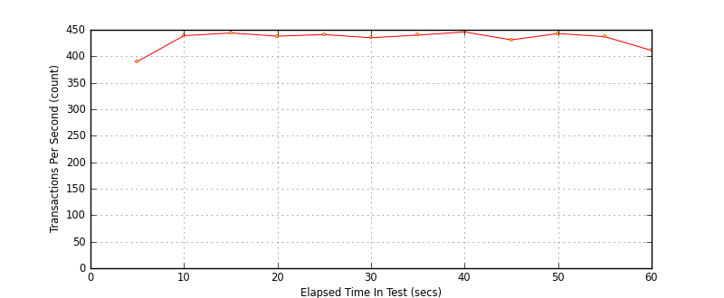

Performance Results Report
Summary
transactions: 26762
errors: 0
run time: 60 secs
rampup: 0 secs
test start: 2017-05-24 18:48:02
test finish: 2017-05-24 18:49:02
time-series interval: 5 secs
workload configuration:
| group name | threads | script name |
|---|
| user_group-21 | 30 | redis_stress.py |
| user_group-20 | 30 | redis_stress.py |
| user_group-23 | 30 | redis_stress.py |
| user_group-22 | 30 | redis_stress.py |
| user_group-25 | 30 | redis_stress.py |
| user_group-24 | 30 | redis_stress.py |
| user_group-2 | 30 | redis_stress.py |
| user_group-3 | 30 | redis_stress.py |
| user_group-1 | 30 | redis_stress.py |
| user_group-6 | 30 | redis_stress.py |
| user_group-7 | 30 | redis_stress.py |
| user_group-4 | 30 | redis_stress.py |
| user_group-5 | 30 | redis_stress.py |
| user_group-8 | 30 | redis_stress.py |
| user_group-9 | 30 | redis_stress.py |
| user_group-10 | 30 | redis_stress.py |
| user_group-11 | 30 | redis_stress.py |
| user_group-12 | 30 | redis_stress.py |
| user_group-13 | 30 | redis_stress.py |
| user_group-14 | 30 | redis_stress.py |
| user_group-15 | 30 | redis_stress.py |
| user_group-16 | 30 | redis_stress.py |
| user_group-17 | 30 | redis_stress.py |
| user_group-18 | 30 | redis_stress.py |
| user_group-19 | 30 | redis_stress.py |
All Transactions
Transaction Response Summary (secs)
| count | min | avg | 80pct | 90pct | 95pct | max | stdev |
|---|
| 26762 | 0.256 | 1.685 | 1.725 | 1.850 | 2.433 | 4.965 | 0.316 |
Interval Details (secs)
| interval | count | rate | min | avg | 80pct | 90pct | 95pct | max | stdev |
|---|
| 1 | 1954 | 390.80 | 0.260 | 1.390 | 1.733 | 2.084 | 2.492 | 4.965 | 0.601 |
| 2 | 2199 | 439.80 | 1.529 | 1.745 | 1.718 | 1.833 | 2.620 | 4.240 | 0.301 |
| 3 | 2224 | 444.80 | 1.493 | 1.700 | 1.702 | 1.758 | 2.045 | 3.612 | 0.223 |
| 4 | 2192 | 438.40 | 1.517 | 1.699 | 1.712 | 1.736 | 1.773 | 3.638 | 0.175 |
| 5 | 2207 | 441.40 | 1.554 | 1.703 | 1.717 | 1.740 | 1.790 | 3.684 | 0.137 |
| 6 | 2176 | 435.20 | 1.115 | 1.708 | 1.757 | 2.270 | 2.581 | 3.918 | 0.357 |
| 7 | 2204 | 440.80 | 1.475 | 1.708 | 1.725 | 1.818 | 1.997 | 4.603 | 0.226 |
| 8 | 2232 | 446.40 | 1.450 | 1.705 | 1.727 | 1.803 | 1.988 | 2.948 | 0.205 |
| 9 | 2157 | 431.40 | 1.174 | 1.710 | 1.778 | 2.334 | 2.594 | 4.395 | 0.360 |
| 10 | 2219 | 443.80 | 1.363 | 1.710 | 1.745 | 1.820 | 2.512 | 3.682 | 0.264 |
| 11 | 2188 | 437.60 | 1.524 | 1.703 | 1.713 | 1.754 | 1.910 | 3.655 | 0.193 |
| 12 | 2059 | 411.80 | 1.042 | 1.708 | 1.804 | 2.334 | 2.623 | 3.687 | 0.370 |
Graphs
Response Time: 5 sec time-series

Response Time: raw data (all points)

Throughput: 5 sec time-series
